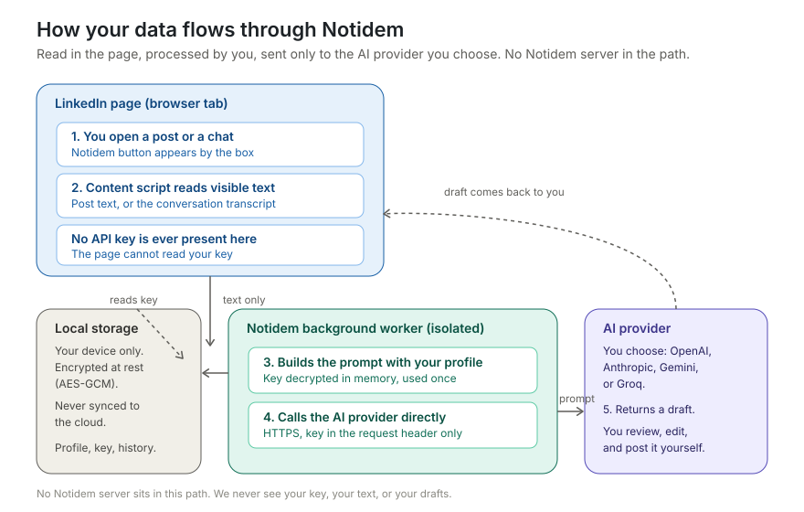

Open-source Chrome extensionExtensão Chrome de código aberto
The opposite of "idem".O oposto de "idem".
Notidem helps you write genuine LinkedIn comments and message replies — in your own voice, grounded in your profile, always reviewed by you before anything is posted.O Notidem ajuda você a escrever comentários e respostas genuínas no LinkedIn — na sua própria voz, com base no seu perfil, e sempre revisados por você antes de publicar.
Free and open. Bring your own AI key. No account, no tracking, no Notidem server.Gratuito e aberto. Use sua própria chave de IA. Sem conta, sem rastreamento, sem servidor do Notidem.
The lazy replyA resposta preguiçosa
idem
What Notidem helps you writeO que o Notidem ajuda a escrever
"The point about hiring for curiosity over credentials lands hard — I made the opposite mistake early on and it cost a whole quarter. How do you screen for it without turning the interview into a trivia quiz?""O ponto sobre contratar por curiosidade em vez de diploma é certeiro — cometi o erro oposto no início e custou um trimestre inteiro. Como você avalia isso sem transformar a entrevista num quiz?"
Why it's differentPor que é diferente
Replies with your essence, not a templateRespostas com a sua essência, não um modelo
Relationships don't grow from "great post". They grow from specific, human responses. Notidem lowers the friction of writing those.Relações não crescem com "ótimo post". Crescem com respostas específicas e humanas. O Notidem reduz o atrito de escrever essas respostas.
CommentsComentários
Open any post, pick a goal — insight, experience, question, agree, or a respectful counter-point — and get a draft grounded in the post and in you.Abra qualquer post, escolha um objetivo — insight, experiência, pergunta, concordar ou um contraponto respeitoso — e receba um rascunho baseado no post e em você.
Message repliesRespostas em mensagens
In a conversation, Notidem reads the visible history and helps you reply in context — reply, thank, propose a next step, answer, or politely decline.Numa conversa, o Notidem lê o histórico visível e ajuda a responder no contexto — responder, agradecer, propor um próximo passo, responder ou recusar com educação.
Your voiceSua voz
Set up a short profile and optionally your résumé. It colors tone and credibility — and never pastes your CV back into a comment.Crie um perfil curto e, se quiser, anexe seu currículo. Ele dá tom e credibilidade — e nunca cola seu CV de volta no comentário.
How it worksComo funciona
Five steps, and you stay in controlCinco passos, e você no controle
1
Open a post or chatAbra um post ou conversa
The Notidem button appears next to the box.O botão do Notidem aparece ao lado da caixa.
2
It reads the visible textEle lê o texto visível
The post, or the conversation transcript. Nothing hidden, nothing else.O post, ou o histórico da conversa. Nada oculto, nada além disso.
3
You pick a goal and generateVocê escolhe um objetivo e gera
The draft is built with your profile and your own AI key.O rascunho é montado com seu perfil e sua própria chave de IA.
4
You edit itVocê edita
Tweak until it sounds like you on a good day.Ajuste até soar como você num bom dia.
5
You post itVocê publica
Notidem never posts or sends anything on its own.O Notidem nunca publica nem envia nada sozinho.
Privacy and securityPrivacidade e segurança
Transparent about where your data goesTransparente sobre onde seus dados vão
No Notidem server sits between you and the AI. We never see your key, your text, or your drafts.Nenhum servidor do Notidem fica entre você e a IA. Nunca vemos sua chave, seu texto ou seus rascunhos.

End-to-end data flow. The API key never reaches the LinkedIn page.Fluxo de dados ponta a ponta. A chave de API nunca chega à página do LinkedIn.
The API key never touches the LinkedIn page — it lives only in the isolated background worker.A chave de API nunca toca a página do LinkedIn — fica só no worker isolado em segundo plano.
Encrypted at rest with AES-GCM, stored locally, never synced to the cloud.Criptografada em repouso com AES-GCM, armazenada localmente, nunca sincronizada com a nuvem.
Never logged. Sent only to the AI provider you choose.Nunca registrada em log. Enviada apenas ao provedor de IA que você escolher.
One-click erase of keys and all data, anytime.Apague chaves e todos os dados com um clique, quando quiser.
Honest limit: no browser extension can fully protect a key against malware already running on your computer — to use a key, it must be decrypted in the browser. Use a scoped key with a low spend limit, and remove it when you're done.Limite honesto: nenhuma extensão protege totalmente uma chave contra malware já em execução no seu computador — para usar a chave, ela precisa ser descriptografada no navegador. Use uma chave com escopo e limite de gasto baixo, e remova-a quando terminar.
ComplianceConformidade
Built to respect LinkedIn and the LGPDFeito para respeitar o LinkedIn e a LGPD
Human in the loop at every step: Notidem drafts, you decide and send. No auto-posting, no mass outreach, no bulk scraping.Humano no controle em cada etapa: o Notidem rascunha, você decide e envia. Sem publicação automática, sem disparo em massa, sem coleta em massa.
Reads only what is already visible on your screen, and only when you ask.Lê apenas o que já está visível na sua tela, e somente quando você pede.
LGPD/GDPR: data is processed locally and transiently, under your consent, with no backend collecting anything.LGPD/GDPR: os dados são processados local e transitoriamente, sob seu consentimento, sem backend coletando nada.
Responsible use. Notidem is an assistant, not a bot. Use it at a human pace, like a spell-checker — not as a growth or mass-outreach tool. It is an independent, unofficial project, not affiliated with or endorsed by LinkedIn. "LinkedIn" is a trademark of its respective owner, and your use of any platform is subject to that platform's own terms.Uso responsável. O Notidem é um assistente, não um robô. Use no ritmo humano, como um corretor ortográfico — não como ferramenta de crescimento ou disparo em massa. É um projeto independente e não oficial, sem vínculo com o LinkedIn nem endosso dele. "LinkedIn" é marca registrada de seu respectivo dono, e o uso de qualquer plataforma está sujeito aos termos dela.
Pending Chrome Web Store reviewEm análise na Chrome Web Store
Install it nowInstale agora
Until the store approves it, load the packaged build directly. It takes a minute.Até a loja aprovar, carregue o pacote diretamente. Leva um minuto.
Download and unzip the latest build.Baixe e descompacte a versão mais recente.
Open Abra chrome://extensions.
Turn on Ative o Developer modeModo de desenvolvedor.
Click Clique em Load unpackedand pick the unzipped folder.e selecione a pasta descompactada.
Open Settings, add your AI key and a short profile, then go to LinkedIn.Abra as Configurações, adicione sua chave de IA e um perfil curto, e vá para o LinkedIn.